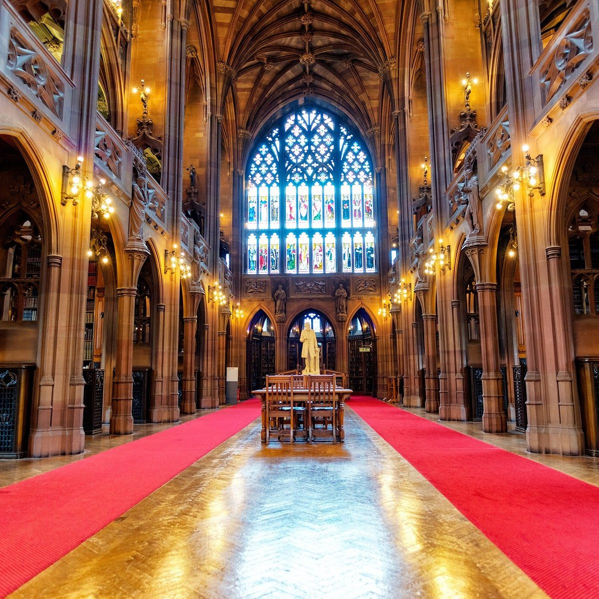

Home Trafford centre Manchester People's Museum Manchester Museum The John Library

The John Lilbrary was built in 1890 and was opened to the public in 1900. It's home to one of the world's richest and most unique collections of books and maps as they are works of art and objects. They're open from Mondays to Fridays, 10AM to 5PM.
For more information, click the link down below!